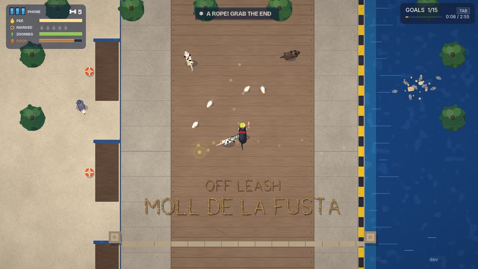

El Port
The fish auction on the wharf
Salt air, iron mooring bollards, startled gulls and fish auction stalls along Barcelona's fishing harbor up to Moll de la Fusta. Guarding the harbor column, the twin bronze lions leap off their plinths in pincer runs until you trip them together across the wharf.
- Off-leash stop
- MOLL DE LA FUSTA (Open plaça)
- Beat the clock
- Under 2:55
- Boss
- Els Lleons
Screenshots



Goals (15)
- Mark 5 spots
- Have 4 good long sniffs
- Get the phone home without a scratch
- Get yourself home without a bump
- Get your business bagged
- Scarf down 2 dropped snacks
- Startle 3 harbor seagulls into flight
- Steer clear of the lions' pincer charge
- Trick the twin lions into colliding
- Wrap the leash around an iron mooring bollard
- Land an x3 trick combo
- Snatch the prize catch from the auction stall
- Spell LEASH
- Find the hidden pernil
- Beat the clock (under 2:55)